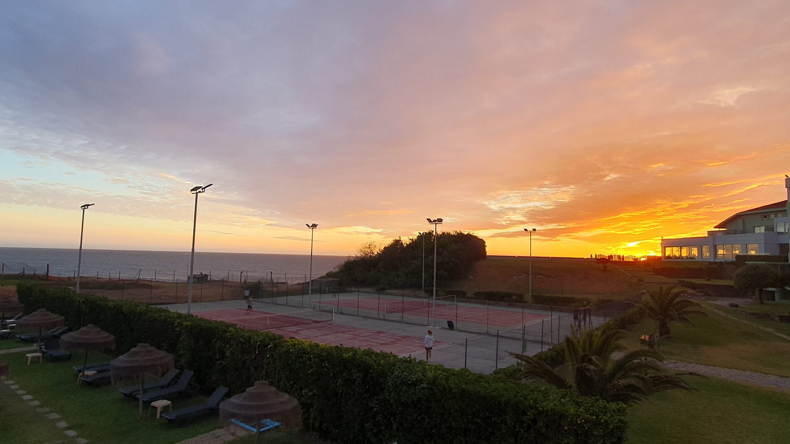
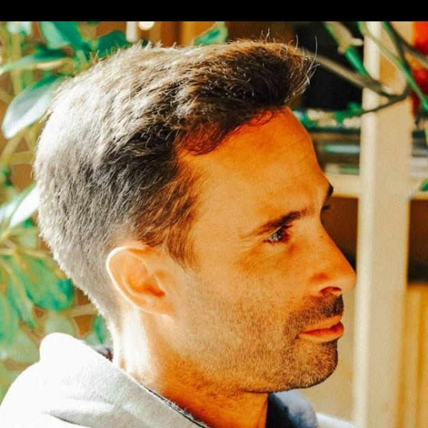

Desperta o tenista que há em ti
Dispomos de aulas para todas as idades e níveis, com um professor experiente e instalações de qualidade.
Agendar uma aula experimentalO Clube Ténis Ofir é um espaço dedicado à prática do ténis, ao bem-estar e ao convívio, proporcionando um ambiente acolhedor para atletas de todas as idades e níveis. Fundado em 2006 e sediado em Fão, é coordenado pelo Professor Igor Vale, contando com instalações modernas e dois campos de piso rápido com vista para o mar.
O clube dispõe treinos individuais e em grupo, programas personalizados para crianças e adultos, bem como a organização de torneios e eventos ao longo do ano. Mais do que promover o desenvolvimento técnico dos jogadores, o nosso clube tem como missão formar pessoas através dos valores do desporto, incentivando o crescimento pessoal, o espírito de comunidade e o gosto pelo ténis.


Curso de Treinador Nível I da Federação Portuguesa de Ténis
Professor de Educação Física, (ESE-IPVC)
Treinador na Escola de Ténis Igor Vale (Clube Ténis Ofir) desde 2006
Formador no SIPE (Sindicato Independente de Professores e Educadores)
Endereço: Fão - Ofir, Esposende (Hotel Axis Ofir)
Telefone: +351 918 424 383
Email: clubetenisofir@gmail.com
Horário de funcionamento:
Segunda a Sabado: 9:00 - 21:00
Domingos: Apenas com hora marcada